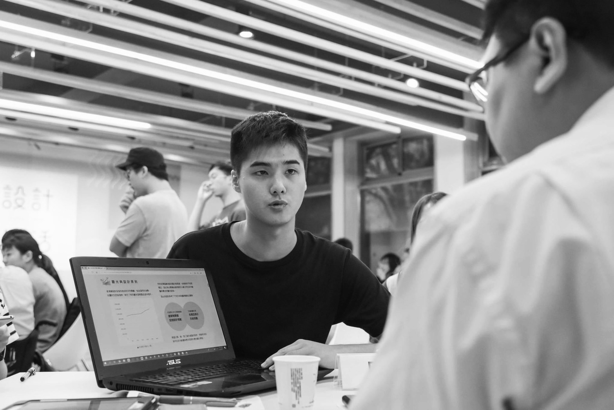

個人簡介
我是陳秉鈞，畢業於成大建築研究所，熱愛分析都市數據以及策略規劃，在研究所階段進行了包括行人舒適路徑的最佳路徑模擬以及利用都市安全虛空間進行安全震災逃生路徑的預測，為了能將數據分析結果以及預測模型更有效地與人產生互動並且進一步改變人的生活行為，因次想加入WeHelp加強前後端的知識以及技術，讓資料視覺化的能力更上一層樓。
為了成為軟體工程師，做過什麼努力？
由於我的專業是都市數據分析以及資料視覺化，為了更進一步能跨足數位孿生(Digital Twin)的領域，我有使用geopandas、Flask以及PostgreSQL寫成行人熱舒適路徑的資料庫，並利用leaflet進行行人熱舒地圖的展示，此外未來想把這個服務透過app的方式進行推廣，因此我額外使用Figma製作mock up，希望在WeHelp Bootcamp可以學習更深入的前後端框架等知識，來弭補只以python套件寫前端的不足。

行人舒適地圖
如果參與這個計畫，會怎麼安排學習時間？
目前我的工作可以遠端的方式完成，時間較為彈性外工作內容會以python、PostgreSQL寫一些後端來建立資料庫，其他會以每日晚上3-4小時的時間進行專案開發以及前端框架等知識學習。
是否有想要加入的軟體公司？為什麼想加入該公司？
請描述一件產生明顯負面情緒的經歷，如何處理該情緒？
在處理都市數據的時候，不論在清理資料、機器學習建模或是在最簡單的套件安裝都會遇到莫名其妙的BUG，這BUG可能花了3-4天仍舊無法解決，每次遇到這類狀況快要放棄時都會在晚上夜深人靜的時候出外散步，重新在腦海中滿滿整理情緒以及問題的解法，等放寬心後再重新面對BUG直到問題解決。
關於這份申請網頁，分享一個開發時的技術心得。
在開發這個網頁的時候，花最多時間研究的部分是網頁的切版以及css的設定，其中包括巢狀結構的安排、css selector、flexbox的設定，在這個過程中除了透過彭彭的YT課程外。配合W3SCHOOLS的開放資源自我摸索，慢慢把這個申請書開發完成。
請用簡短兩三句話，描述對你而言，最重要的一項人際交往原則。
最重要的應該是誠實的面對彼此，將最直接的想法說出來才可以有效率地交流並以此了解最合適的相處模式是什麼，才能夠有後續深入的交往以及解決問題的基礎。
其他想要對我們說的事情？
我從WeHelp辦第一屆的時候就有在關注，但礙於本身是念建築系的，設計課已經佔掉大部分的時間以致沒有申請，現在趁著剛當完兵的空檔想深入鑽研前後端的知識，希望將來能應用在都市數位孿生的領域。